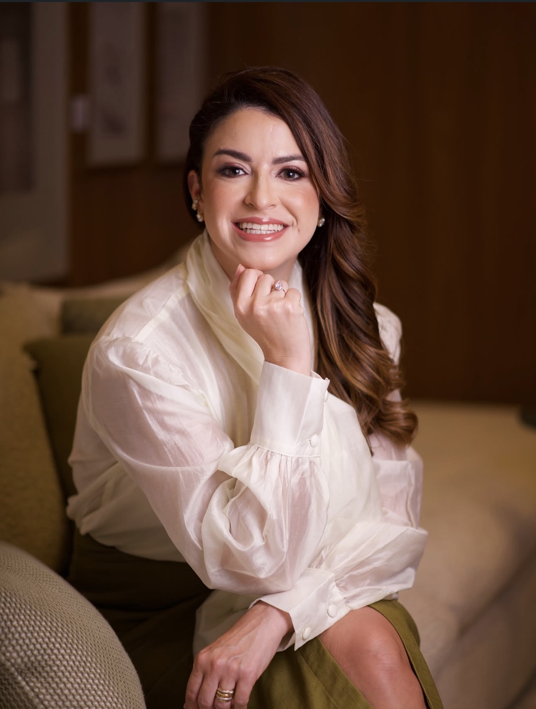
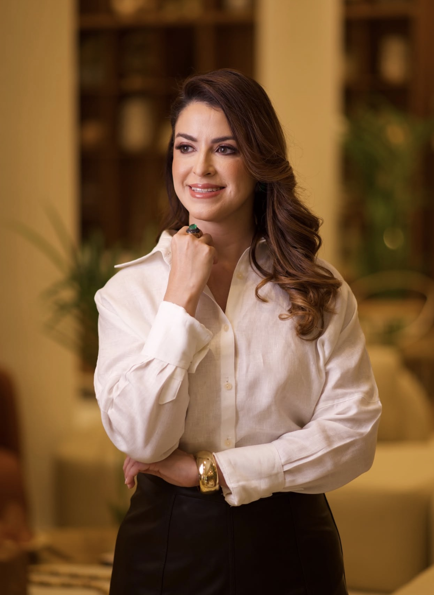

Uma conversa sem pressa
Conte o que está incomodando, quando começou e o que mudou na sua rotina.
Saúde urinária e íntima da mulher, com atenção à sua história, às suas dúvidas e ao que importa para você.
Agendar consulta ↗ CIÊNCIA, ESCUTA E CUIDADO
CIÊNCIA, ESCUTA E CUIDADO
Uma abordagem individualizada para conversar sobre saúde urinária, mudanças íntimas e qualidade de vida, sem julgamentos.

Sou Thatiana Machado Brasil, mãe e médica urologista. Me formei em Medicina na Universidade Federal do Amazonas e concluí minha residência em Urologia na Rede D’Or, no Rio de Janeiro, em 2021.
Em 2022, fiz um fellowship de um ano na UERJ, com foco em urologia feminina, uroginecologia e urologia funcional.
Na consulta, quero entender o que você sente e como isso afeta sua vida. É um espaço para conversar, esclarecer dúvidas e avaliar os cuidados indicados para você.
Como funciona a consulta ↗Informação, investigação e cuidado adequado a cada história.

Conte o que está incomodando, quando começou e o que mudou na sua rotina.
A avaliação considera sua história, suas necessidades e os exames disponíveis.
Os caminhos de cuidado são conversados conforme o que for identificado na consulta.
Se tiver exames anteriores e uma lista dos medicamentos que usa, leve com você.
Sim. A Dra. Thatiana atua no cuidado com a saúde urinária da mulher e tem formação complementar em urologia feminina, uroginecologia e urologia funcional.
Você pode solicitar sua consulta e levar os exames que já possui. A necessidade de novos exames será avaliada pela médica.
Fale com a equipe para consultar a disponibilidade de horários para uma consulta particular.
O atendimento particular acontece em Manaus. A equipe informará os dados completos da clínica após a confirmação das informações de localização.
Atendimento particular em Manaus. Consulte a disponibilidade com a equipe.
Contato profissional em confirmação para ativação do agendamento.